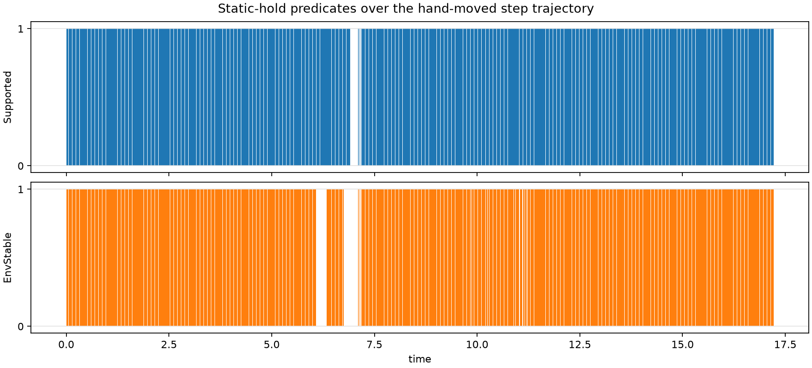

5. The hold LP
The hold test H asks whether some set of contact forces, each inside its friction cone, can hold the box still against gravity. physics/hold.py answers it with a linear program solved by MPAX. Each asserted template contributes one contact point (its gap midpoint), a normal (its gap normal), and three force components: two signed tangential components and one nonnegative normal component. The friction cone is replaced by an 8-sided pyramid. Force and torque on the box must balance in all six components. create_predicates returns two jitted predicates of (state, formation):
- Supported: every asserted contact may push, the disk’s included.
- EnvStable: only environment contacts may push.
python walkthrough/05_hold.py
The script, 05_hold.py (download)
"""Step 5: the static-hold LP (Supported and EnvStable).
create_predicates returns two jitted functions of (state, formation):
Supported admits every asserted contact, EnvStable drops the manipulator's.
Each solves one friction-cone LP for the box's wrench balance at the
asserted templates' gap midpoints and normals.
"""
import time
import jax.numpy as jnp
import numpy as np
from cmg.catalog.templates import Catalog
from cmg.physics.hold import create_predicates
from cmg.physics.world import ExecutionWorld, State
from _common import fixtures, load_spec, on, template_names
spec = load_spec()
catalog = Catalog.from_spec(spec)
world = ExecutionWorld(spec.execution)
names = template_names(spec, catalog)
# The same tolerance that marking/candidate.py uses inside the search.
supported, env_stable = create_predicates(spec, catalog, world, tolerance=1e-3)
print("Friction per body pair (MuJoCo's priority rule):")
for a, b in ((0, 1), (1, 2), (1, 3), (1, 4)):
print(f" {spec.bodies[a].name}-{spec.bodies[b].name}: mu = {world.pair_friction(a, b)}")
print("Box mass:", float(world.model.body_mass[1]), "kg")
def state_at(qpos):
qpos = jnp.asarray(qpos)
return State(qpos, jnp.zeros_like(qpos))
def mask(*wanted):
return jnp.array([n in wanted for n in names])
start = time.perf_counter()
supported(state_at(fixtures()["flat"]), mask())
print(f"\nFirst call (compiles the LP): {time.perf_counter() - start:.1f} s")
print("\nBand formation at each fixture:")
print(f" {'fixture':16s} Supported EnvStable")
for name, qpos in fixtures().items():
state = state_at(qpos)
band = catalog.band(world.pose(state))
print(f" {name:16s} {bool(supported(state, band))!s:9s} {bool(env_stable(state, band))}")
flat = state_at(fixtures()["flat"])
print("\nHand-picked formations at 'flat':")
for formation in (
(),
("B:zn-L:boundary",),
("B:xn-L:boundary",),
("B:xp-L:boundary", "B:xn-L:boundary"),
):
f = mask(*formation)
print(f" {on(f, names):40s} Supported={bool(supported(flat, f))}")
start = time.perf_counter()
for _ in range(20):
supported(flat, mask("B:zn-L:boundary")).block_until_ready()
print(f"\nCompiled call: {(time.perf_counter() - start) / 20 * 1e3:.1f} ms each")Output
Friction per body pair (MuJoCo's priority rule):
M-B: mu = 0.9900000095367432
B-L: mu = 0.20000000298023224
B-S: mu = 0.20000000298023224
B-P: mu = 0.20000000298023224
Box mass: 0.10000000149011612 kg
First call (compiles the LP): 6.2 s
Band formation at each fixture:
fixture Supported EnvStable
flat_stable_far True True
flat_stable_close True True
flat True True
hanging True True
toppled30_far False False
toppled30_close True False
toppled60_far True True
Hand-picked formations at 'flat':
{} Supported=False
{B:zn-L:boundary} Supported=False
{B:xn-L:boundary} Supported=False
{B:xp-L:boundary, B:xn-L:boundary} Supported=False
Compiled call: 1.4 ms eachThe test suite runs both predicates along the demo trajectory and saves tests/result/step_hold_lp_trajectory.png:

What to notice
- Friction comes from MuJoCo. When two geoms have different
priority, the higher one’s friction wins: the disk (priority 2, μ = 0.99) against the box (priority 0), and the environment (priority 1, μ = 0.2) against the box. - The box resting flat is “not supported” by its bottom face alone. One bit,
B:zn-L, fails; the five-bit band formation passes. Exercise 5.1 explains why. Today the hold test passes only because of the extra bits from step 3. toppled30_closeis the interesting row. With the disk pushing it is held (Supported); without the disk it is not (EnvStable). The search uses this to refuse letting go mid-topple (step 6).- Cost. Compiling takes about 6 s; a call then costs about 1.4 ms on the CPU.
- The LP’s objective minimizes the total normal force of manipulator contacts; only feasibility is used.
Code to read
src/cmg/physics/hold.py, from the bottom up:
create_predicatesbuilds the incidence (which body each force acts on, with sign), the per-template friction, and the manipulator mask, and returns the two jitted predicates. EnvStable is the same predicate with manipulator templates removed fromallowed._predicatecomputes midpoints and normals, averaged over five tiny perturbations ofqpos(1e−5 along each coordinate) to smooth ties._solve_contact_lpassembles the wrench matrix and the cone constraints, calls MPAX’sraPDHG, and re-checks balance and cones withintolerance._friction_constraintsbuilds the 8-sided pyramid.
Exercises
5.1 Why does {B:zn-L} alone fail at flat while the five-bit band formation passes? Print the midpoints of the in-band templates.
import jax.numpy as jnp, numpy as np
from cmg.catalog.templates import Catalog
from cmg.physics.world import ExecutionWorld, State
from _common import fixtures, load_spec, template_names
spec = load_spec(); catalog = Catalog.from_spec(spec); world = ExecutionWorld(spec.execution)
names = template_names(spec, catalog)
q = jnp.array(fixtures()["flat"]); pose = world.pose(State(q, jnp.zeros_like(q)))
mid, nrm, band = map(np.asarray, (catalog.gap_midpoint(pose), catalog.gap_normal(pose), catalog.band(pose)))
for i in np.flatnonzero(band):
print(names[i], mid[i].round(4), nrm[i].round(3))B:xp-L:boundary [-0.0375 -0.0625 0. ] [-0. -0. -1.]
B:xn-L:boundary [-0.1625 -0.0625 0. ] [-0. -0. -1.]
B:yp-L:boundary [-0.1625 0.0625 0. ] [-0. -0. -1.]
B:yn-L:boundary [-0.1625 -0.0625 0. ] [-0. -0. -1.]
B:zn-L:boundary [-0.1625 -0.0625 0. ] [-0. -0. -1.]The midpoint of a face-on-plane contact is one representative closest pair, here a corner of the bottom face, not the face. One corner under the box cannot balance gravity’s torque about it, so {B:zn-L} fails. The five bits together give three distinct corners: (−0.0375, −0.0625), (−0.1625, −0.0625) and (−0.1625, 0.0625), all at z = 0.
The center of mass projects to (−0.1, 0), which lies exactly on the hypotenuse x + y = −0.1 of that triangle. The LP is feasible, with all the weight on two corners, but the margin is zero: the support passes on the boundary. It still passes with tolerance=1e-5. Under Decision 6’s robust margin this formation would score zero. Step 1 gives each contact its full contact set (the face’s endpoints), so the LP sees the true support polygon.
5.2 In the table, toppled30_close is Supported but not EnvStable. What does that imply for an edit that breaks the disk contact at that pose?
Breaking M:boundary-B:xn leaves only environment contacts, and those cannot hold the box (EnvStable is false). The hold test of step 6 checks the contacts that persist through an edit, so that break is illegal there, and step 6’s output confirms it. This is the persistent-contact rule (Decision 7): you may not let go mid-topple, but the same break becomes legal once the box has landed.
5.3 Is toppled30_far unstable because the environment’s friction (μ = 0.2) is too low? Test it with μ = 1.
Write a copy of the scene with a higher environment friction and evaluate EnvStable there:
import pathlib, tempfile
import jax.numpy as jnp
from cmg.catalog.templates import Catalog
from cmg.physics.hold import create_predicates
from cmg.physics.world import ExecutionWorld, State
from _common import CMG, STEP_YAML, fixtures, load_spec
folder = pathlib.Path(tempfile.mkdtemp())
xml = (CMG / "src/cmg/scene/families/step.xml").read_text()
(folder / "step.xml").write_text(xml.replace('friction="0.2 1.0 0.1"', 'friction="1.0 1.0 0.1"'))
(folder / "step.yaml").write_text(
STEP_YAML.read_text().replace('"src/cmg/scene/families/step.xml"', str(folder / "step.xml")))
spec = load_spec(folder / "step.yaml"); catalog = Catalog.from_spec(spec); world = ExecutionWorld(spec.execution)
_, env_stable = create_predicates(spec, catalog, world, tolerance=1e-3)
for name in ("toppled30_far", "toppled60_far"):
q = jnp.array(fixtures()[name]); state = State(q, jnp.zeros_like(q))
print(name, world.pair_friction(1, 2), bool(env_stable(state, catalog.band(world.pose(state)))))toppled30_far 1.0 False
toppled60_far 1.0 TrueStill unstable, at μ = 0.2, 0.3, 0.4, 0.5 and 1.0 alike, so friction is not the issue. The box’s center of mass is at x = −0.0409, behind its floor contact at x = −0.018 (exercise 3.3), so gravity tips it backward, away from the step. The only other support is the step corner, which can push but not pull. No friction coefficient fixes that; only the disk pushing from behind does (toppled30_close). At 60° the center of mass has passed over the floor contact and the corner holds it.